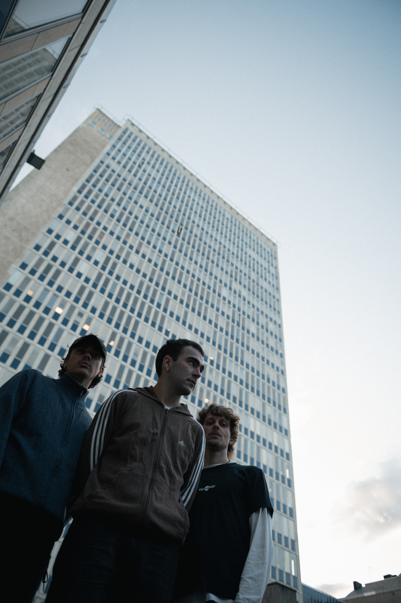
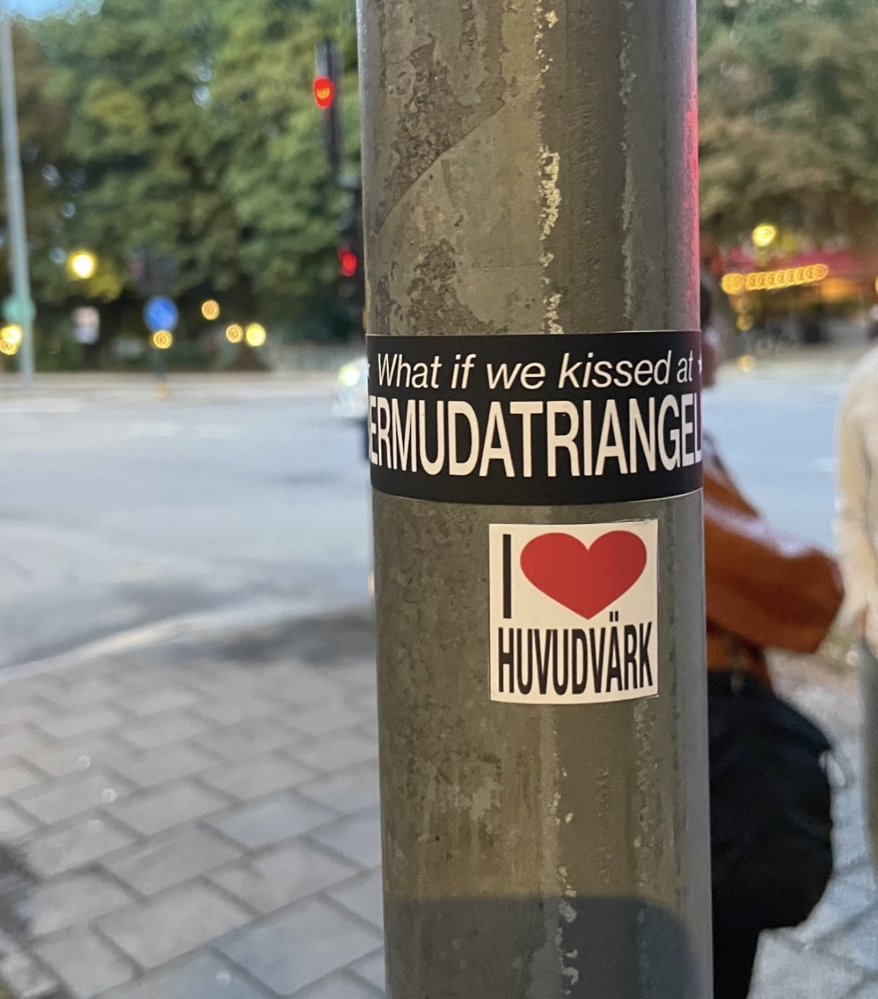

HUVUDVÄRK
Du, min Bermuda. Tar du nånsin slut?
Du, min Bermuda. Tar du nånsin slut?
Om Huvudvärk
Huvudvärk är ett indierockband från Stockholm som förenar melankolisk rock med trasiga synthar och ett säreget melodispråk. Alltid med blicken riktad mot vardagens dramatik. I augusti släppte de debutsingeln ”Bermudatriangeln” från det kommande debutalbumet ”Samma Grå”. Det är den första av flera singlar planerade runder hösten och vintern innan albumet släpps i början av 2027.
Huvudvärk bildades i Stockholm av Ludwig Zetterberg, William Rundström och Lukas Appelquist. Efter
flera år av
samarbeten i andra projekt hittade de ett nytt utlopp i Huvudvärk. Bandet representerar en plats där
känsla och budskap står i
centrum, snarare än perfektion. Musiken lever i gränslandet mellan det organiska och det
elektroniska. Mellan det vackra och det skeva.
I augusti 2026 släppte Huvudvärk sin debutsingel ”Bermudatriangeln”, den första i en serie singlar
som leder fram till
debutalbumet ”Samma Grå”; ett album om förlösning, förlåtelse och att stå helt stilla.
"Samma grå" är ett 10-spårigt drama som rör sig sömlöst mellan storslagna stråkarrangemang, distade gitarrer och pricksäkert låtskriveri.
Under hösten och vintern fortsätter de att släppa ny musik inför albumets
release i början av 2027.




För bokningar, press och samarbeten.
contact@huvudvark.com{kind=link}
{kind=link}